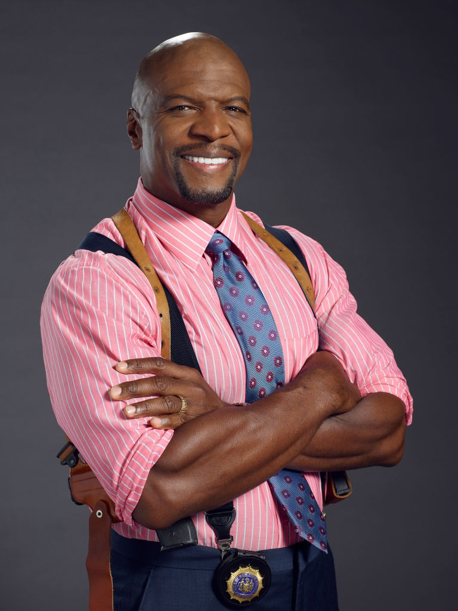

Terry Jeffords is the best character on the show. Here is a pro-con chart and a list which illustrate this.
| Pros |
Cons |
| Hilarious |
None |
| Kind-hearted |
N/A |
| Isn't overdone |
Nothing |
- He doesn't have a huge number of lines, but the ones he does have are usually really funny
- He has the best gimmicks - yogurt and going to the gym
- He always supports Jake and the other members of the precinct.
Back